O que é um Sistema de Controlo de Versões?
Abreviado para SCV, um Sistema de Controlo de Versões tem como objetivo primordial
manter um histórico de alterações e permitir a navegação e operações sobre o conteúdo
desse referido histórico. Como exemplos de sistemas deste género são de referir:
- Git
- Subversion
- Mercurial
- CVS
- Bazaar
Os tipos de arquitetura de um SCV são:
- Centralizada: A sincronização é efetuada através de um único ponto;
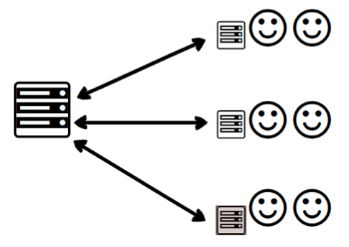
- Distribuída: A sincronização é efetuada através de múltiplos pontos independentes
uns dos outros.
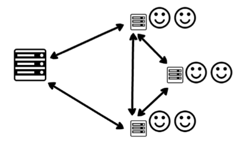
O Git e o seu funcionamento/workflow
Sendo o Sistema de Controlo de Versões mais popular atualmente, o GIT é o SCV utilizado,
tanto na cadeira de Web Design II, como por mim em outras cadeiras do curso e no que toca a
projetos pessoais. Um facto curioso é que trata-se de um projeto open-source
criado pela mesma pessoa que deu vida ao sistema operativo Linux: Linus Torvalds.
Irei explicar o funcionamento desta extraordinariamente útil tecnologia com detalhe em seguida.
Funcionamento local do GIT: O GIT poderá ser utilizado de forma local, sendo possível
iniciar um repositório localmente e proceder à sua respetiva configuração apenas no que toca à máquina utilizada pelo programador. Existem diversos comandos que permitem o versionamento local do GI.
- Configuração do repositório ao nível local, ou ao nível global, com o comando inicial
git config e como as imagens em seguida demonstram-no (sendo de destacar a inclusão
da opção "--global" para uma configuração global do Git a nível do computador utilizado):
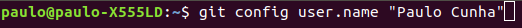
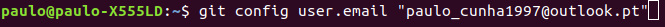
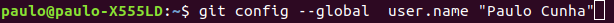
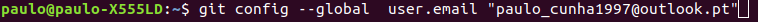
- Também é possível iniciar um novo repositório local através do comando git init,
demonstrado em seguida, sendo que este comando cria um ficheiro ".git" dentro do diretório do
projeto em questão, apresentando este ficheiro a estrutura necessária à gestão do SCV sob o desenvolvimento do mesmo. No caso a seguir apresentado foi criado um novo repositório "vazio" dentro do scope do ficheiro ".git", que apenas se encontra presente nesta demonstração por razões ilustrativas:
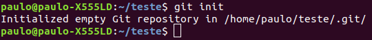
- Através do comando git status é possível saber o estado atual dos ficheiros
inerentes ao versionamento, como demonstrado pelos exemplos, sendo dadas indicações
do que o utilizador deverá fazer (adicionar ficheiros para o estado de staged ou
proceder ao acrescento de mais destes):
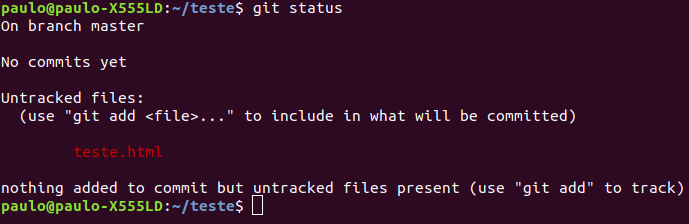
- Um ficheiro poderá encontrar-se em dois tipos diferentes de estado: tracked e untracked.
Untracked significa que o dado ficheiro não se encontra a ser controlado pelo SCV,
enquanto que o estado tracked indica que o ficheiro encontra-se sob o controlo do GIT e
poderá dividir-se em três diferentes categorias: modified, unmodified e staged,
apresentadas em seguida:
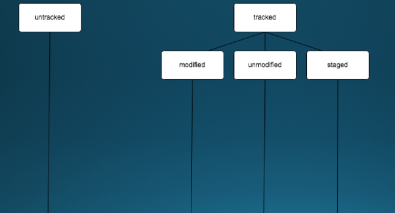
- A partir do momento em que um ficheiro é adicionado através do comando git add,
esse ficheiro passa para o estado de staged, movimento visível no diagrama que se encontra abaixo:
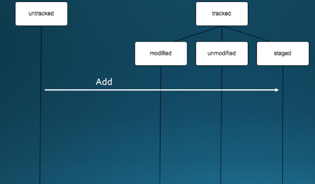
- O processo seguinte ao adicionar de um ficheiro denomina-se de git commit e é essencialmente
o momento em que uma espécie de "screenshot" é tirado ao ficheiro, isto é, ao exato momento em que
o ficheiro se encontra na altura do commit, sendo o processo descrito pela
entrada deste no estado unmodified e, em seguida modified, após edição posterior realizada pelo user. Finalmente,
o ficheiro regressará ao estado staged, após nova utilização do comando git add mas há que ter em conta que já se encontra
no modo tracked há muito tempo. Este processo descrito trata-se do "workflow" do versionamento de ficheiros,
geralmente falando. As seguintes imagens ilustram os acontecimentos referidos:
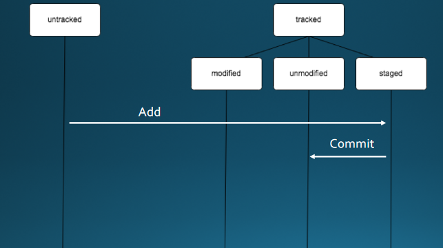
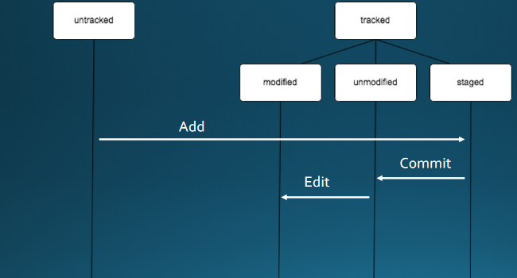
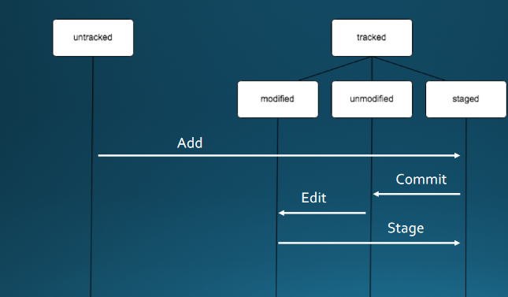
- O ficheiro também poderá, de resto, ser removido. Este deixará de se encontrar no estado
tracked, passando novamente para o estado inicial untracked.
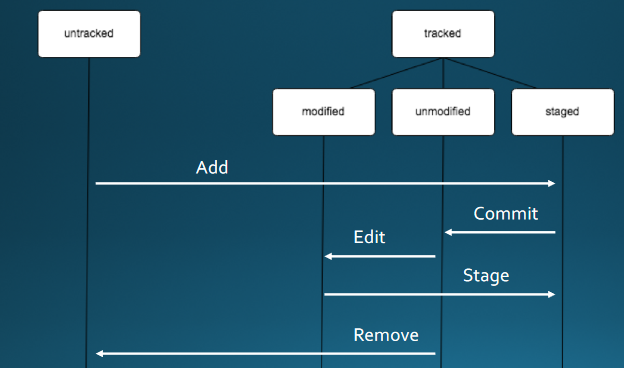
- Como já referido, mas com a sua aplicação não exemplificada num caso real, todo este processo de versionamento de um ficheiro (ou conjunto de ficheiros e diretórios)
poderá ser inicializado conseguido através dos comandos cruciais git add e git commit-m "mensagem",
exemplificados abaixo:
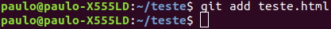
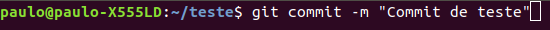
Funcionamento remoto do Git: Quanto à parte "remota" do Git, é de referir
a possibilidade de copiar um repositório, bem como criar ou alterar o conteúdo do mesmo.
Também existem as opções de versionar e submeter o código. Os comandos principais que envolvem
a fase "online" (e ao mesmo tempo essencial para coloboração de developers
à distância) do Git tratam-se do git clone "url.git" e git push "alias/url.git", sendo que neste último poderá ser especificada uma branch específica que não o master (como o exemplo assim o demonstra). De resto, falarei de branches no seguimento desta análise ao Git.
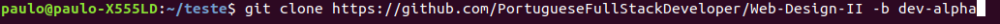
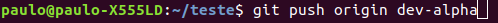
A possibilidade de criar "branches" no Git
O Git permite a possibilidade de criar "branches" aquando do versionamento
de projetos. De que se trata esta funcionalidade?
- Essencialmente, "branching" é a criação de "ramos" num projeto que permitirão
efetuar alterações que não irão interferir com o "tronco" principal (master) do projeto. "Ramos" nos quais é facilitada
a experimentação de novas alterações sem comprometer a integridade total do trabalho em questão (sendo este
preservado na condição de master);
- Os comandos mais utilizados para o "management" das branches são: git branch "nome do branch"
(permite criar uma nova branch no projeto), git checkout "branch" (mudança entre branches ou para o
master, existindo a opção "-b", que essencialmente
cria uma branch que à partida não existe e logo de seguida faz o checkout para a mesma), git branch (permite listar todos os branches) e git merge (o ato de juntar
uma branch a outra ou ao master, sendo que este último possui a opção "--no-ff" que impede
o ato de fast forward). Todos estes processos são demonstrados em seguida:
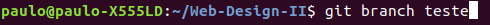
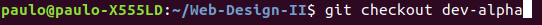
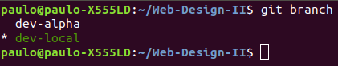
Considerações finais
- Devo admitir que, estudando e desenvolvendo código há relativamente pouco
tempo, não reconhecia tanta utilidade na utilização de um SCV (neste caso do Git).
Este foi o caso até ao início desta cadeira e, tanto pelo facto do sistema ser utilizado tanto nas
fichas de trabalho como falado na parte teórica da cadeira;
- Tendo também investigado mais acerca do Git por conta própria apercebi-me
do quão útil e valiosa esta ferramenta é para um developer ou aspirante a sê-lo nos dias que correm.
Deixei de ter preocupações quanto ao perigo da perda de código e a minha produtividade tanto no trabalho a solo como em grupo subiu em flecha. Comecei
a fazer da utilização do Git (e GitHub) uma espécie de "ritual" diário,
aprendendo mais a cada dia acerca das melhores formas de utilizar o software em questão,
criando tanto branches de desenvolvimento como realizando commits
em alturas estratégicas;
- Não tenho quaisquer dúvidas que irei utilizar sempre esta ferramenta
e tentar continuar a apreender conhecimentos acerca da mesma durante o meu futuro
nesta área em específico.